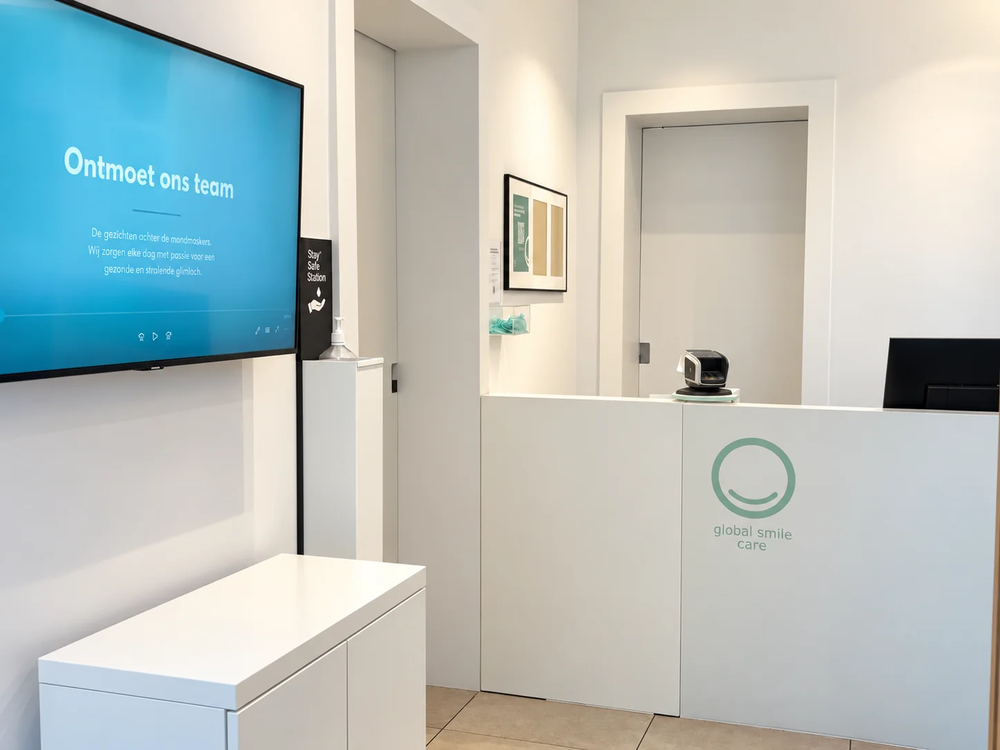
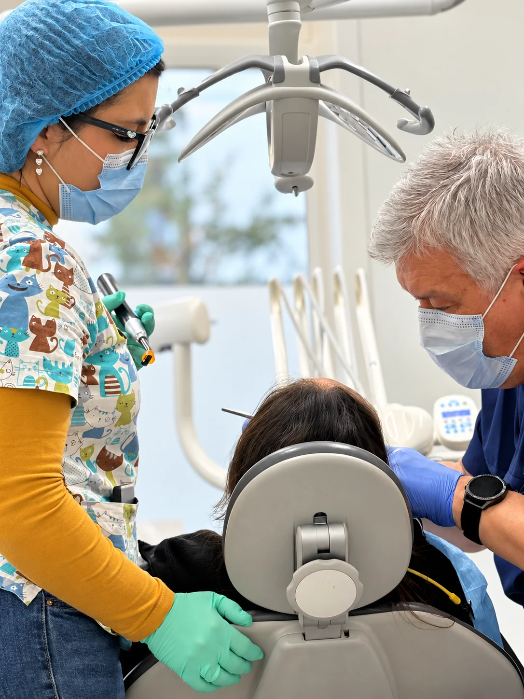
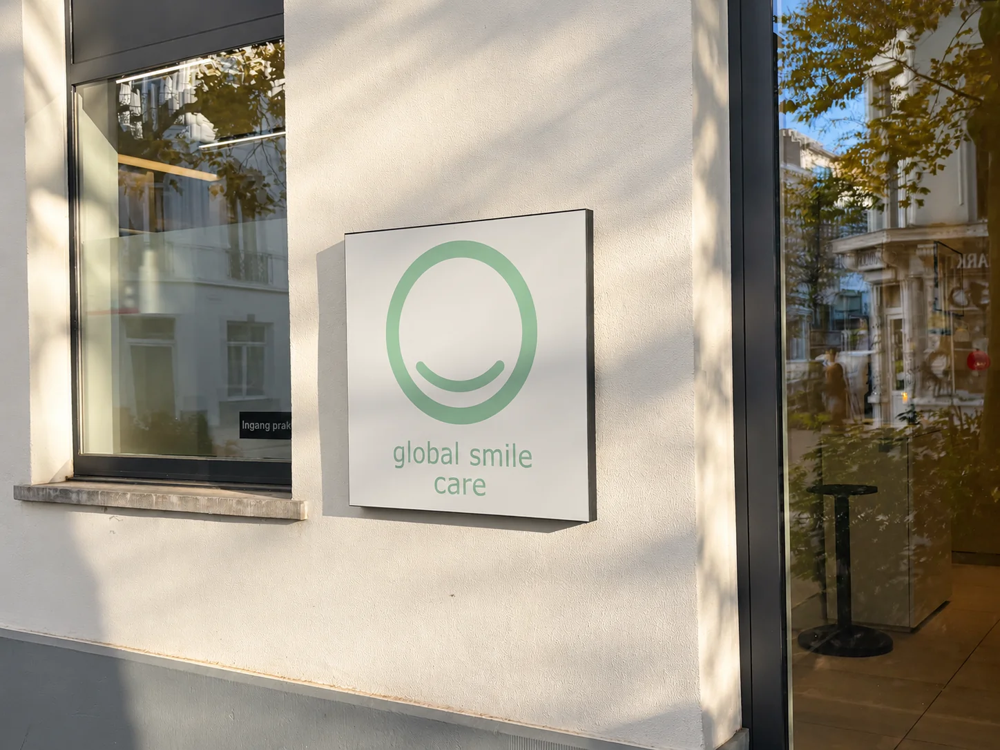

Zorg met aandacht
We luisteren naar uw vraag en bespreken samen de volgende stap.
Welkom bij Global Smile Care. Onze tandartsen in Antwerpen-Zuid helpen u met controles, vullingen en andere tandzorg. Nieuwe patiënten zijn welkom.
Maak online een afspraak


Ons tandtechnisch laboratorium werkt nauw samen met het behandelteam. Zo kunnen we de technische kant van uw behandeling rechtstreeks afstemmen met de mensen die u behandelen.
In deze video ziet u hoe er achter de schermen wordt gewerkt.
Meer over onze praktijkBij Global Smile Care kunt u terecht voor tandzorg met aandacht. We luisteren naar uw vraag en bespreken samen de volgende stap.
Onze praktijk ↗We luisteren naar uw vraag en bespreken samen de volgende stap.
We bieden controles en eenvoudige behandelingen aan in woonzorgcentra.
Van controles en gaatjes vullen tot tanden bleken en tandprotheses.
Tijdens een controle bekijken we uw tanden en tandvlees en bespreken we wat nodig is.
Vakkundige tandzorg en een warm welkom, van de balie tot de behandelruimte.
Onze tandartsen luisteren naar uw vragen, leggen de mogelijkheden uit en begeleiden u met aandacht.
Onze assistenten ontvangen u, houden alles op koers en staan tijdens uw behandeling voor u klaar.
Voor uw glimlach kunt u bij ons terecht voor verschillende behandelingen.
Een pijnloze bleekbehandeling voor een zichtbaar wittere glimlach.
Een tandprothese of volledig kunstgebit, afgestemd op uw situatie.
Controles en eenvoudige behandelingen in woonzorgcentra.
Lees ervaringen van patiënten op ons Google-profiel. Daar vindt u de oorspronkelijke beoordelingen en de meest recente reacties.
Lees beoordelingen op GoogleAntwoorden op veelgestelde vragen over onze praktijk en behandelingen.
Ja, nieuwe patiënten zijn welkom bij Global Smile Care.
U kunt bij ons terecht voor controles, gaatjes vullen, tanden bleken en tandprotheses.
Ja, afspraken plannen kan via onze online agenda.
Ja, we bieden ambulante controles en eenvoudige behandelingen.
U vindt ons op Tolstraat 40, 2000 Antwerpen.
Plan uw bezoek aan onze praktijk in Antwerpen-Zuid eenvoudig online.
Afspraak maken ↗Neem contact met ons op voor informatie over onze praktijk en behandelingen.
Bezoek onsTolstraat 40, 2000 AntwerpenBel ons03 216 03 08E-mailinfo@globalsmilecare.beWhatsAppStuur ons een berichtPlan uw afspraak online of neem contact met ons op. We helpen u graag verder.
Online afspraak makenU vindt Global Smile Care op Tolstraat 40 in Antwerpen-Zuid.
Neem tram 4 of 10 en stap uit aan halte Kasteelplein.
Voor de praktijk is ruime fietsparkeergelegenheid.
In de Tolstraat en omliggende straten kunt u betalend parkeren. De ondergrondse Q-Park Museum aan de Leopold de Waelplaats ligt op ongeveer vijf minuten wandelen.